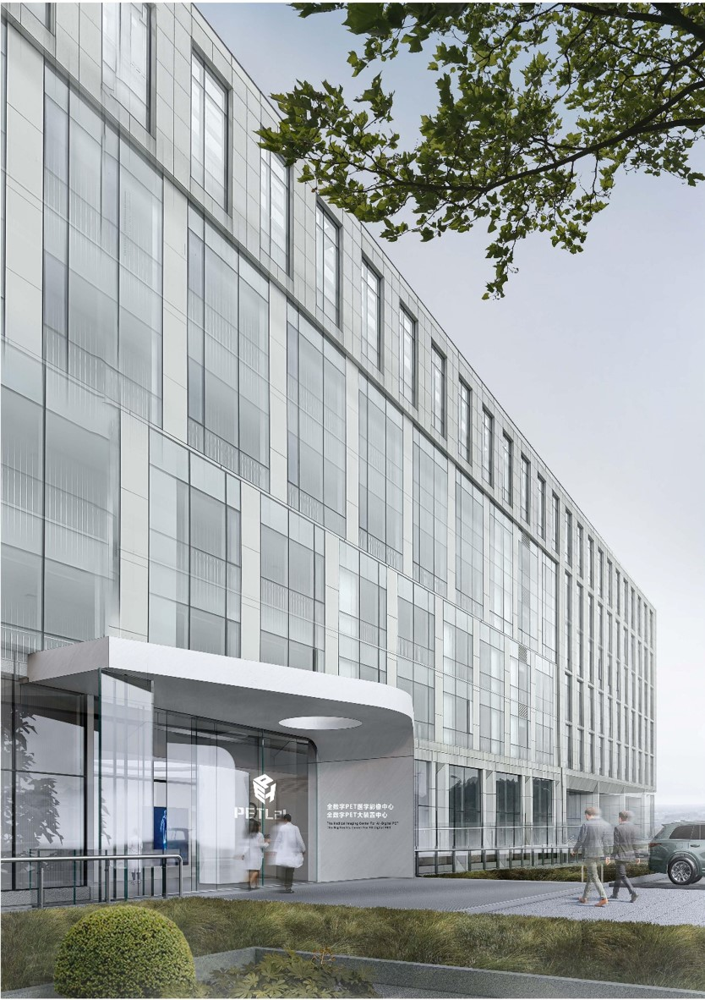

先进设施
数字PET实验室构建了一个遵循国内领先和国际一流标准的高水平跨学科研究及人才培养平台。

一、设施信息
华中科技大学国际医学中心，中国湖北省武汉市东湖新技术开发区群英路66号。
二、建设目标
本设施按照国内领先、国际一流标准建设，是高水平跨学科研究与人才培养平台。平台面向世界科技前沿、经济主战场、国家重大需求和人民生命健康，开展医学与工学、理学及人文社会科学的交叉研究，是“医学+”交叉学科体系建设的核心载体和引领性科研基地。
三、设施组成
以超快光电集成生物分子成像系统、先进显微光学成像系统、超高灵敏磁共振成像系统和可重构全数字PET主样机四大科学仪器为中心，该综合体包括图像融合与处理中心及全套综合分析仪器。它作为综合性研究设施和公益服务平台运营。

一、设施信息
华中科技大学生命科学与技术学院，湖北省武汉市洪山区珞喻路1037号，中国
二、建设目标
该项目旨在建设一个集成全数字PET原型系统研发、工程验证、前沿应用研究及活体动物成像的专业动物PET影像平台。作为支持创新技术工程转化和最新算法快速验证的科研设施，它建立了涵盖模型动物准备、放射示踪剂注射、活体成像、数据重建、特征提取和定量评估的完整端到端实验工作流程。
三、设施组成
数字PET
J1/J2成像节点位于华中科技大学生命科学与技术学院内，包括缓冲室、放射示踪剂注射室、废物储存室、成像室1、成像室2、控制室、动物饲养室1和动物饲养室2等功能房间。通过仿生薄管和实验动物管理¹⁸F、¹¹C、⁶⁸Ga、¹³N及¹⁵O等放射性核素，以进行PET系统性能表征与临床前动物PET试验。